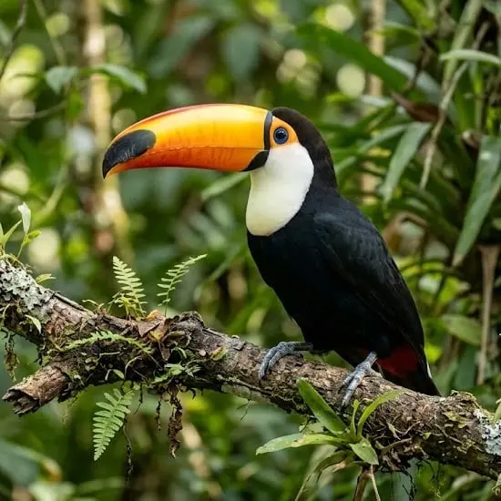

NATUREZA · CIDADANIA · PARTICIPAÇÃO
Defender o meio ambiente é defender a vida.
Conheça a trajetória da PROESP e suas ações em defesa da natureza, dos territórios e de um futuro mais sustentável.

Cuidar do meio ambiente é cuidar de nós.QUEM SOMOS
Uma história de compromisso com a natureza.
A Associação Protetora da Diversidade das Espécies (PROESP) atua em Campinas e região, participando de iniciativas, debates e mobilizações relacionadas à proteção ambiental.
Conheça nossa história →NOSSA ATUAÇÃO
O meio ambiente precisa de voz.
Preservação ambiental
Defesa das áreas verdes, da biodiversidade e dos ecossistemas.
Proteção das águas
Valorização dos rios e das bacias hidrográficas da região.
Educação ambiental
Compartilhamento de conhecimento e conscientização.
Participação social
Mobilização cidadã e presença em debates públicos.
ACOMPANHE
Faça parte da conversa sobre o futuro ambiental.
Acompanhe as publicações da PROESP e conheça as atividades promovidas pela associação.